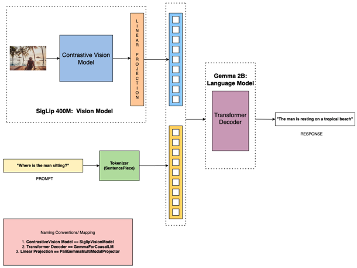
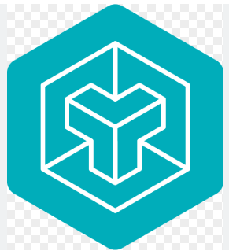

Implementing/Coding the components of DeepSeek and documenting
DeepSeek Components
Sensor Fusion and 3D Object Detection
Familiarity with Point Cloud data and 3D Object Detection, including Sensor Fusion Techniques.
Sensor Fusion and 3D Object Detection

Quantisation, Compression and Knowledge Distillation on Semantic Segmentation
Real-time Deployment Solutions to Optimising the Inference time and Size of the model.
Quantisation, Compression and Knowledge Distillation

Semantic Segmentation(coding models from scratch): SegFormer
Transformer-based Models on Vision.
Visualising Attention Maps

Paligemma-MultiModal-System
- Contrastive Vision Model
- Gemma Language Model
- Linear Projector
Paligemma Multi-Modal System: A Comprehensive implementation from Scratch, Emulating Multi-Modal Architectures

Custom GPU Kernels Using Triton and benchmarking
- Custom softmax with shared memory
- Fast Matrix Multiplication from scratch
- Dropout kernel with random mask generation
- LayerNorm implementation and fusion
- Efficient attention kernel with block-wise processing
- End-to-end fused CE loss with memory profiling
GPU Kernel Programming with Triton
Distributed LLM Fine-Tuning
- DeepSpeed
- Distributed Data Parallel (DDP)
- Fully Sharded Data Parallel (FSDP)
- LoRA (Low-Rank Adaptation)
- Quantization
This project addresses these challenges by demonstrating various distributed training paradigms and VRAM optimization strategies.